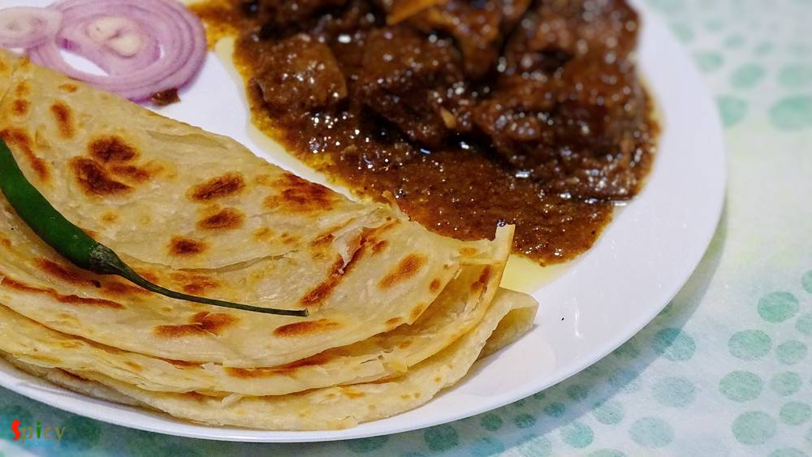

Simple and Easy Recipes

Nonveg Recipe
Mar 23, 2016
Whenever I buy different types of sauces from market, can't think anything but Chinese dishes. With few ingredients you can creat such a splendid item. So, last of last weekend I went ahead and made 'chicken manchurian', the more I can say about it's delicious tangy and spicy taste the less it seems. We enjoyed it with some fried rice but you can also serve this with hakka noodles or simple rumali ...

")
Veg Recipe
Mar 21, 2016
I have seen two types of cauliflower's roast curry from childhood, my mom makes the yellow + spicy version and the other one is white + sweet version. Both of them are my favourite but today I am sharing the recipe of second version because I have already shared a similar as 1st one cauliflower curry in my earlier post. So, in Bengal this cauliflower white curry becomes very popular during festiva ...
")
Veg Recipe
Mar 17, 2016
I made last weekend another successful eggless cake and the flavour was 'coconut'. I have never used coconut before in cake batter but this time I do and result was 'scrumptious'. After making this, your heart will call for a bite to this moist cake and then a sip of warm tea ... aaaahh pure bliss ! If you are obsessed with coconut then treat yourself with a big piece of this eggless flaky coconut ...

Veg Recipe
Mar 17, 2016
The best and most common weeknight's meal is dal and rice. Nobody likes to eat bland dal, everybody needs some zing to their comfort food sometimes. So, 'spicy urad dal' is my new favourite dal with some kick. You can also call this lentil soup 'tarke wali dal', now everyone has their own story of 'tempering'. I have used lots of garlic, fresh curry leaves, cumin and mustard seeds. But you can add ...

Nonveg Recipe
Mar 16, 2016
If fish is the right hand of our cooking, then 'kochuri' must be the left hand. Both of them are quintessential part of Bengali cuisine. Almost every weekend our breakfast has to be 'luchi' or 'kochuri' and on special day or maybe on guests arrival 'stuffed pooris' are inevitable. In this recipe soft and flaky pooris are stuffed with spicy, crumbled fish filling. After one bite, you can't resist y ...
Mar 15, 2016
This prawn curry is a family recipe and my mom-in-law is an expert of making it. It's a very common fish curry in Bengali households. We love to eat prawns in many forms, but his favorite is this one. I would suggest you to make this dish with small prawns, you will get much more flavours. First I fried the prawns, potato and cauliflowers, then cook them with gravy. Plain rice will go very well wi ...

Nonveg Recipe
Mar 15, 2016
Do you have some boneless chicken, onion and capsicum in your kitchen?? Then why don't you make some 'tikkas'? Chicken Tikka is a very well known starter or kabab in India. Nowadays it also become popular in the whole world. You can make delicious gravy also with these tikkas. But first you have to make chicken tikka and here is the recipe ..

Veg Recipe
Mar 13, 2016
In India one of the famous bread is 'lachha paratha', soft and flaky with lots of layers. You can pair almost any veg or non veg gravy with this paratha, everytime they will taste awesome. For novice, this type of paratha may not be successful on first attempt. But believe me, after few try they will seem very easy. The main attraction here is the layers. The more layers you can make, the more fla ...

Nonveg Recipe
Mar 9, 2016
Ahhh, atlast I got the time to write down this particular. Made this Chicken Pizza two months ago with Makhni gravy, but the recipe is a bit long, so didn't get the time to write in one sitting. Finally I am posting the delicious pizza recipe. The main attraction here is the sauce which is makhni gravy. I know that we all are a big fan of 'murg makhni' or 'paneer makhni', then why not try this sau ...

Veg Recipe
Mar 7, 2016
I think without a cup of tea every day is incomplete. Don't you think so ?? Tea plays a very important role in our life. In the morning my father needs a cup of tea, a biscuit and a newspaper. I guess every household has the same story in India. To me every gossip and get to gather is incomplete without tea. Every country has their own taste of tea. Here is the recipe of our Indian special 'masala ...